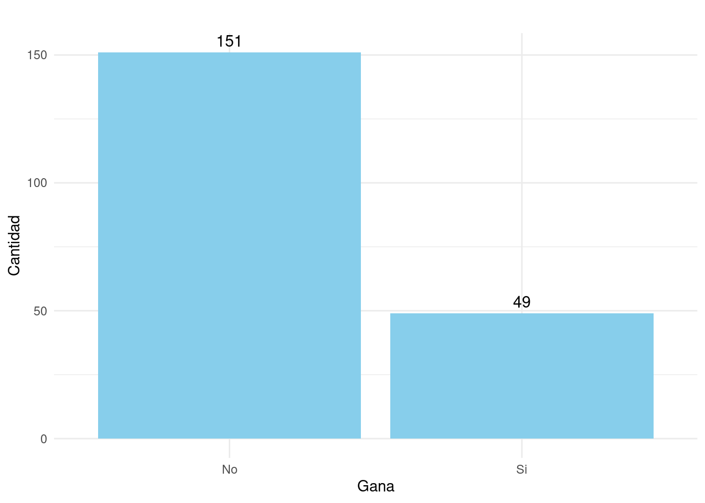

Se ha llevado a cabo un estudio para analizar los factores que influyen en el éxito de los estudiantes en el primer curso de matemáticas universitario, conocido como Fundamentos de Matemáticas. Para este propósito, se recopiló información sobre si los estudiantes aprobaron o no (gana, con valores de 1, si aprobaron y 0 si no) este curso, así como sus notas de matemáticas correspondientes al último grado de bachillerato (nota).
El objetivo del estudio es desarrollar un modelo de regresión logística que permita comprender cómo la nota obtenida en matemáticas en el último grado de bachillerato está relacionada con la probabilidad de gana en el primer curso de matemáticas universitario. El modelo permitirá evaluar si la nota es un predictor significativo del éxito en el curso y proporcionar una estimación de la relación entre estas dos variables.
El modelo se ajustará a los datos recopilados y se evaluará su capacidad para predecir si un estudiante tendrá éxito en el curso Fundamentos de Matemáticas en función de su nota de bachillerato. Los resultados ayudarán a comprender mejor los factores que influyen en el desempeño de los estudiantes en esta materia universitaria.
summarytools::dfSummary(dataMat)Data Frame Summary
Dimensions: 200 x 2
Duplicates: 149
--------------------------------------------------------------------------------------------------------
No Variable Stats / Values Freqs (% of Valid) Graph Valid Missing
---- ----------- ----------------------- -------------------- --------------------- ---------- ---------
1 gana 1. No 151 (75.5%) IIIIIIIIIIIIIII 200 0
[factor] 2. Si 49 (24.5%) IIII (100.0%) (0.0%)
2 nota Mean (sd) : 3.1 (0.5) 40 distinct values . . : 200 0
[numeric] min < med < max: : . : : : (100.0%) (0.0%)
2.1 < 3.1 < 4.4 : : : : :
IQR (CV) : 0.6 (0.1) : : : : : : :
. : : : : : : : : .
--------------------------------------------------------------------------------------------------------library(caret)
t1 =table(dataMat$gana) %>%
prop.table()
glm(gana ~ nota , family = binomial(link = "logit"), data = dataMat) -> modelo1
summary(modelo1)
Call:
glm(formula = gana ~ nota, family = binomial(link = "logit"),
data = dataMat)
Coefficients:
Estimate Std. Error z value Pr(>|z|)
(Intercept) -24.008 3.771 -6.366 1.94e-10 ***
nota 6.921 1.113 6.216 5.10e-10 ***
---
Signif. codes: 0 '***' 0.001 '**' 0.01 '*' 0.05 '.' 0.1 ' ' 1
(Dispersion parameter for binomial family taken to be 1)
Null deviance: 222.71 on 199 degrees of freedom
Residual deviance: 106.29 on 198 degrees of freedom
AIC: 110.29
Number of Fisher Scoring iterations: 7library(caret)
# separacion de muetras 60% - 40%
ntrain <- nrow(dataMat)*0.6
ntest <- nrow(dataMat)*0.4
set.seed(123)
index_train<-sample(1:nrow(dataMat),size = ntrain)
train<-dataMat[index_train,] # muestra de entrenamiento
test<-dataMat[-index_train,] # muestra de prueba
# matriz de confucion
valor_pronosticado <- predict(modelo1,test,type = "response")
niveles_pronosticados <- ifelse(valor_pronosticado >0.5, "Si","No") %>%
factor(.)
confusionMatrix(niveles_pronosticados, test$gana )Confusion Matrix and Statistics
Reference
Prediction No Si
No 67 4
Si 2 7
Accuracy : 0.925
95% CI : (0.8439, 0.972)
No Information Rate : 0.8625
P-Value [Acc > NIR] : 0.06427
Kappa : 0.6576
Mcnemar's Test P-Value : 0.68309
Sensitivity : 0.9710
Specificity : 0.6364
Pos Pred Value : 0.9437
Neg Pred Value : 0.7778
Prevalence : 0.8625
Detection Rate : 0.8375
Detection Prevalence : 0.8875
Balanced Accuracy : 0.8037
'Positive' Class : No
library(ROSE)
# oversampling
train.blc <- ovun.sample(gana~., data=train,
p=0.5, seed=1,
method="over")$data
table(train.blc$gana)
No Si
82 80 test.blc <- ovun.sample(gana~., data=test,
p=0.5, seed=1,
method="over")$data
table(test.blc$gana)
No Si
69 67 glm(gana ~ nota , family = binomial(link = "logit"), data = train.blc) -> modelo2
summary(modelo1)
Call:
glm(formula = gana ~ nota, family = binomial(link = "logit"),
data = dataMat)
Coefficients:
Estimate Std. Error z value Pr(>|z|)
(Intercept) -24.008 3.771 -6.366 1.94e-10 ***
nota 6.921 1.113 6.216 5.10e-10 ***
---
Signif. codes: 0 '***' 0.001 '**' 0.01 '*' 0.05 '.' 0.1 ' ' 1
(Dispersion parameter for binomial family taken to be 1)
Null deviance: 222.71 on 199 degrees of freedom
Residual deviance: 106.29 on 198 degrees of freedom
AIC: 110.29
Number of Fisher Scoring iterations: 7# matriz de confucion
valor_pronosticado <- predict(modelo2,test.blc,type = "response")
niveles_pronosticados <- ifelse(valor_pronosticado >0.5, "Si","No") %>%
factor(.)
confusionMatrix(niveles_pronosticados, test.blc$gana )Confusion Matrix and Statistics
Reference
Prediction No Si
No 64 12
Si 5 55
Accuracy : 0.875
95% CI : (0.8074, 0.9255)
No Information Rate : 0.5074
P-Value [Acc > NIR] : <2e-16
Kappa : 0.7496
Mcnemar's Test P-Value : 0.1456
Sensitivity : 0.9275
Specificity : 0.8209
Pos Pred Value : 0.8421
Neg Pred Value : 0.9167
Prevalence : 0.5074
Detection Rate : 0.4706
Detection Prevalence : 0.5588
Balanced Accuracy : 0.8742
'Positive' Class : No
library(paqueteMODELOS)
library(tidyverse)
data("dataMat")
dataMat = sample(dataMat, 2000, replace = TRUE)
# separacion de muetras
ntrain <- nrow(dataMat)*0.6
ntest <- nrow(dataMat)*0.4
set.seed(123)
index_train<-sample(1:nrow(dataMat),size = ntrain)
train<-dataMat[index_train,] # muestra de entrenamiento
test<-dataMat[-index_train,] # muestra de prueba
library(ROSE)
# oversampling
train.blc <- ovun.sample(gana~., data=train,
p=0.5, seed=1,
method="over")$data
test.blc <- ovun.sample(gana~., data=test,
p=0.5, seed=1,
method="over")$dataglm(gana ~ nota , family = binomial(link = "logit"), data = train.blc) -> modelo2
summary(modelo1)
Call:
glm(formula = gana ~ nota, family = binomial(link = "logit"),
data = dataMat)
Coefficients:
Estimate Std. Error z value Pr(>|z|)
(Intercept) -24.008 3.771 -6.366 1.94e-10 ***
nota 6.921 1.113 6.216 5.10e-10 ***
---
Signif. codes: 0 '***' 0.001 '**' 0.01 '*' 0.05 '.' 0.1 ' ' 1
(Dispersion parameter for binomial family taken to be 1)
Null deviance: 222.71 on 199 degrees of freedom
Residual deviance: 106.29 on 198 degrees of freedom
AIC: 110.29
Number of Fisher Scoring iterations: 7# matriz de confucion
valor_pronosticado <- predict(modelo2,test.blc,type = "response")
niveles_pronosticados <- ifelse(valor_pronosticado >0.5, "Si","No") %>%
factor(.)
confusionMatrix(niveles_pronosticados, test.blc$gana )Confusion Matrix and Statistics
Reference
Prediction No Si
No 518 101
Si 95 486
Accuracy : 0.8367
95% CI : (0.8145, 0.8572)
No Information Rate : 0.5108
P-Value [Acc > NIR] : <2e-16
Kappa : 0.6731
Mcnemar's Test P-Value : 0.721
Sensitivity : 0.8450
Specificity : 0.8279
Pos Pred Value : 0.8368
Neg Pred Value : 0.8365
Prevalence : 0.5108
Detection Rate : 0.4317
Detection Prevalence : 0.5158
Balanced Accuracy : 0.8365
'Positive' Class : No
library(pROC)
# Calcular la curva ROC
# roc_curve <- roc(dataMat$gana, modelo1$fitted.values)